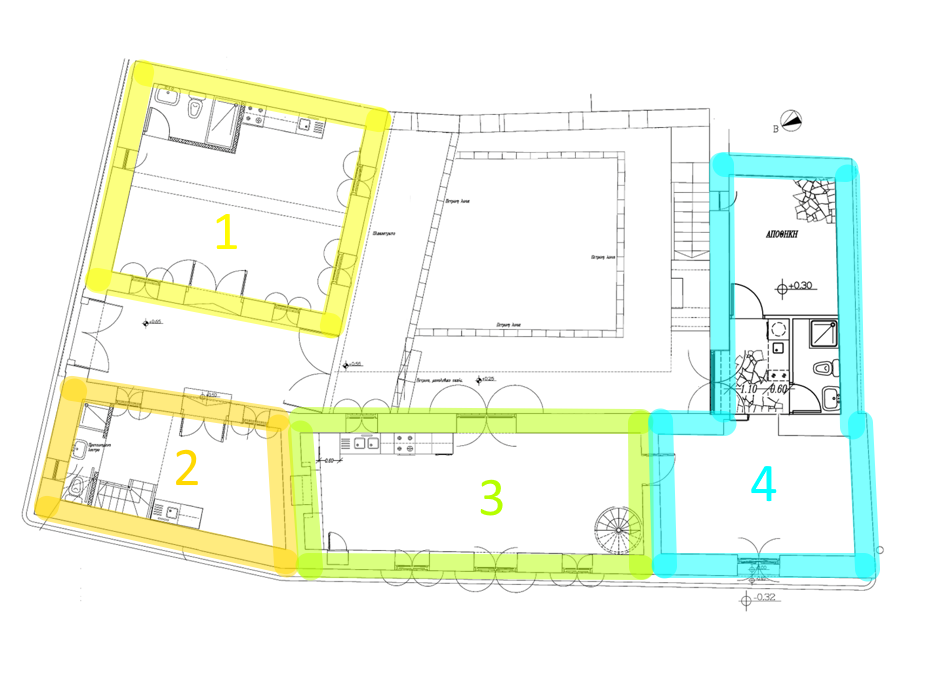

Renovation
The building is currently being renovated. Planning and designs started already in 2020, while the construction started in 2023. It is expected to be complete by the summer of 2025.
Units
The building consists of 342 sqm of covered areas plus 76 sqm yard. These are organised as 5 individual apartments.
All the apartments have their own entrance, with access to the shared, central yard.
|  Ground floor |
 First floor
First floor
|
Unit 1 - Dichoro (or Kamara)
This is a studio apartment of 50 sqm, with a private bathroom and kitchen. Its most prominent feature is a stonebuilt arch, splitting the space to two (thus 'Dichoro' or two-volumes).
It includes a large door and two windows facing the shared, covered veranda space. Additionally, it has window facing the yard, plus another floor-to-top window also facing the yard.
It features a complete kitchen (sink, stove, oven, extractor, refrigerator, and space for a washing machine).
It has a private bathroom with a shower.
It includes heating (underfloor electric system) and cooling (air conditioner with inverter).
Unit 2 - Acheronari (hay room)
This is a studio apartment of 37 sqm, with a private bathroom and kitchenette. Its most prominent feature is the high ceiling and the added steel-made mezzanine. This room was originally built for hay storage.
It includes a large door and two windows facing the shared, covered veranda space.
It features a small kitchenette (with a sink and provision for a freestanding stove and oven, and a refrigerator).
It has a private bathroom with a shower.
It includes heating (underfloor electric system) and cooling (air conditioner with inverter).
Unit 3 - Kafenio (old coffee house)
This is the largest unit, in effect a two-story townhouse with a living room, a common area, and 2 large bedrooms. It covers a large space, with a ground floor area of 45 sqm and a first floor area of another 60 sqm. Its most prominent feature is the fireplace in the kitchen area and the great views from the first floor windows facing the balcony.
It features its own road-facing entrance and two windows, plus a window and large door facing the inner shared yard. On the first floor, the rooms have large windows facing the street, plus doors facing the balcony.
It features a complete kitchen (sink, stove, oven, extractor, refrigerator, and space for a washing machine).
It has a private bathroom with a shower, on the first floor.
The two levels are connected via a steel-made helix staircase.
It includes heating (underfloor electric system with independent controls for each room, except for a wall-mounted heater for the room with the wooden floor) and cooling (air conditioners with inverter in each room).
Note: This unit can be combined with Unit 4, as they are separated by a shared door on the ground floor, allowing for more space if needed.
Unit 4 - Raftadiko (old tailor house)
This is a one-bedroom apartment of 57 sqm, with a private bathroom. A prominent feature is the stable with a ceiling constructed of wooden branches and a floor constructed with rock plates.
It features its own street-facing, plus a large door facing the inner shared yard.
It has a private bathroom with a shower.
It includes heating (underfloor electric system for the main room and wall-mounted electric heater for the stable) and cooling (air conditioners with inverter in each room).
Unit 5 - Anooui (mezzanine room)
This is a studio apartment of 30 sqm, with a private bathroom and kitchenette. The entrance of this room is at the stairs, halfway up the first floor.
It includes a door facing the stairs and the shared yard. It also has two windows facing south-east towards the square where the town house is.
It features a small kitchenette (with a sink and provision for a freestanding stove and oven, and a refrigerator).
It has a private bathroom with a shower.
It includes heating (underfloor electric system) and cooling (air conditioner with inverter).
Status
The building is currently under restoration. Work started in 2023 and is expected to be complete during the summer of 2025.
.jpg)
.jpg)
{kind=link}
{kind=link}
{kind=link}
{kind=link}
{kind=link}
{kind=link}
.jpg){kind=link}
{kind=link}
{kind=link}
.jpg){kind=link}